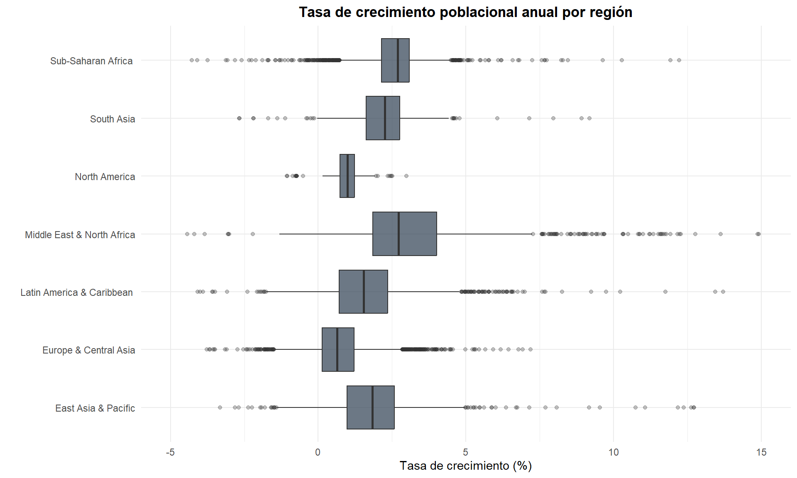

Capítulo 9 Tasa de Crecimiento y Conclusiones
9.1 Tasa de Crecimiento Poblacional
crecimiento <- df_paises %>%
filter(!is.na(population)) %>%
group_by(country) %>%
arrange(year) %>%
mutate(tasa_crecimiento = (population / lag(population) - 1) * 100) %>%
ungroup()
crecimiento_promedio <- crecimiento %>%
filter(!is.na(tasa_crecimiento)) %>%
group_by(country, region, incomeLevel) %>%
summarise(tasa_media = mean(tasa_crecimiento, na.rm = TRUE),
tasa_mediana = median(tasa_crecimiento, na.rm = TRUE),
.groups = "drop") %>%
arrange(desc(tasa_media))kable(head(crecimiento_promedio, 10),
caption = "Top 10 países con mayor crecimiento promedio anual")| country | region | incomeLevel | tasa_media | tasa_mediana |
|---|---|---|---|---|
| United Arab Emirates | Middle East & North Africa | High income | 8.457914 | 6.170797 |
| Qatar | Middle East & North Africa | High income | 7.356294 | 7.554179 |
| Kuwait | Middle East & North Africa | High income | 5.211615 | 5.601193 |
| Djibouti | Middle East & North Africa | Lower middle income | 4.337281 | 2.916639 |
| St. Martin (French part) | Latin America & Caribbean | High income | 4.217970 | 2.930134 |
| Jordan | Middle East & North Africa | Upper middle income | 4.179249 | 3.993327 |
| Bahrain | Middle East & North Africa | High income | 4.001929 | 3.390677 |
| Oman | Middle East & North Africa | High income | 3.825799 | 3.719968 |
| Saudi Arabia | Middle East & North Africa | High income | 3.712629 | 3.365669 |
| Cayman Islands | Latin America & Caribbean | High income | 3.701707 | 3.625065 |
kable(tail(crecimiento_promedio, 10),
caption = "Top 10 países con menor crecimiento (o decrecimiento)")| country | region | incomeLevel | tasa_media | tasa_mediana |
|---|---|---|---|---|
| Ukraine | Europe & Central Asia | Lower middle income | 0.0796775 | 0.3046118 |
| Bosnia and Herzegovina | Europe & Central Asia | Upper middle income | 0.0614331 | 0.2252094 |
| Georgia | Europe & Central Asia | Upper middle income | 0.0478203 | 0.6949547 |
| St. Kitts and Nevis | Latin America & Caribbean | High income | 0.0462350 | 0.0162526 |
| Lithuania | Europe & Central Asia | High income | 0.0124087 | 0.4103643 |
| Croatia | Europe & Central Asia | High income | -0.0177713 | 0.2542082 |
| Hungary | Europe & Central Asia | High income | -0.0369885 | -0.1539722 |
| Latvia | Europe & Central Asia | High income | -0.1604120 | 0.0433696 |
| Bulgaria | Europe & Central Asia | Upper middle income | -0.1925301 | -0.3917091 |
| Serbia | Europe & Central Asia | Upper middle income | -0.2950077 | -0.3854876 |
Las tablas de crecimiento promedio anual revelan patrones demográficos consistentes con la teoría de la transición demográfica. Los países con mayor crecimiento se concentran en Medio Oriente (Emiratos Árabes, Qatar, Kuwait) y África Subsahariana, regiones donde convergen altas tasas de fecundidad, estructuras etarias jóvenes y, en el caso del Golfo Pérsico, flujos masivos de inmigración laboral que inflan artificialmente las tasas de crecimiento. En el extremo opuesto, los países con decrecimiento pertenecen predominantemente a Europa del Este y territorios insulares del Pacífico, reflejando fenómenos de envejecimiento poblacional, emigración sostenida y tasas de natalidad por debajo del nivel de reemplazo. La diferencia entre la tasa media y la mediana en algunos países sugiere la presencia de años atípicos con crecimientos o decrecimientos extraordinarios, posiblemente vinculados a eventos geopolíticos puntuales como conflictos o procesos de independencia.
ggplot(crecimiento %>%
filter(!is.na(tasa_crecimiento) & !is.na(region) & region != "Aggregates"),
aes(x = region, y = tasa_crecimiento, fill = region)) +
geom_boxplot(alpha = 0.7, outlier.alpha = 0.3) +
coord_flip() +
labs(title = "Tasa de Crecimiento Poblacional Anual por Región",
x = "", y = "Tasa de Crecimiento (%)") +
theme_minimal(base_size = 11) +
theme(plot.title = element_text(face = "bold", hjust = 0.5),
legend.position = "none") +
scale_fill_brewer(palette = "Set3") +
ylim(-5, 15)
Figure 9.1: Distribución de la tasa de crecimiento poblacional anual por región
El boxplot regional constituye una herramienta analítica robusta para comparar las distribuciones de las tasas de crecimiento entre regiones. África Subsahariana presenta la mediana más elevada y una distribución con sesgo positivo, confirmando que la mayoría de los países africanos experimentan crecimientos superiores al promedio global. Medio Oriente y Norte de África exhibe la mayor dispersión intercuartílica, lo que refleja la heterogeneidad demográfica de la región: coexisten países con crecimiento explosivo impulsado por la inmigración (Estados del Golfo) con otros de crecimiento moderado (Túnez, Líbano). Europa y Asia Central destaca por tener la mediana más baja y una dispersión significativa que incluye valores negativos, evidenciando los procesos de despoblación activa en varios países del este europeo. América Latina y el Caribe muestra una distribución compacta centrada en tasas moderadas (1-2%), consistente con una región que avanza en su transición demográfica pero que aún no ha alcanzado la estabilización poblacional. Los valores atípicos (outliers) visibles en todas las regiones corresponden a eventos demográficos extraordinarios como migraciones masivas, conflictos o booms petroleros que generaron crecimientos o decrecimientos anómalos en periodos específicos.
9.2 Conclusiones
A partir del análisis exploratorio realizado, se destacan los siguientes hallazgos principales:
Estructura del dataset: El dataset contiene información longitudinal robusta con buena cobertura para las variables demográficas básicas. Las variables de migración presentan un porcentaje significativo de valores faltantes debido a su periodicidad quinquenal.
Crecimiento poblacional: La población mundial presenta una tendencia positiva entre 1960 y 2018, con un crecimiento que se concentra cada vez más en los países de ingreso bajo y medio-bajo, especialmente en África Subsahariana y Asia del Sur.
Desigualdad demográfica: Existe una enorme disparidad poblacional entre países. China e India concentran más de un tercio de la población mundial, mientras que decenas de microestados tienen poblaciones inferiores al millón.
Patrones migratorios: Los flujos migratorios netos reflejan la brecha económica global: las economías de alto ingreso atraen migrantes, mientras que los países de ingreso bajo y medio son emisores netos.
Densidad poblacional: No existe una relación directa entre tamaño poblacional y densidad. Los territorios más densos son generalmente ciudades-estado o islas pequeñas, donde la relación \(\rho = P/A\) se ve amplificada por superficies territoriales reducidas.
Transición demográfica: Las tasas de crecimiento muestran una clara diferenciación regional, con Europa en un proceso avanzado de estabilización/decrecimiento y África en pleno auge demográfico, lo que configura un escenario de redistribución poblacional global en las próximas décadas.